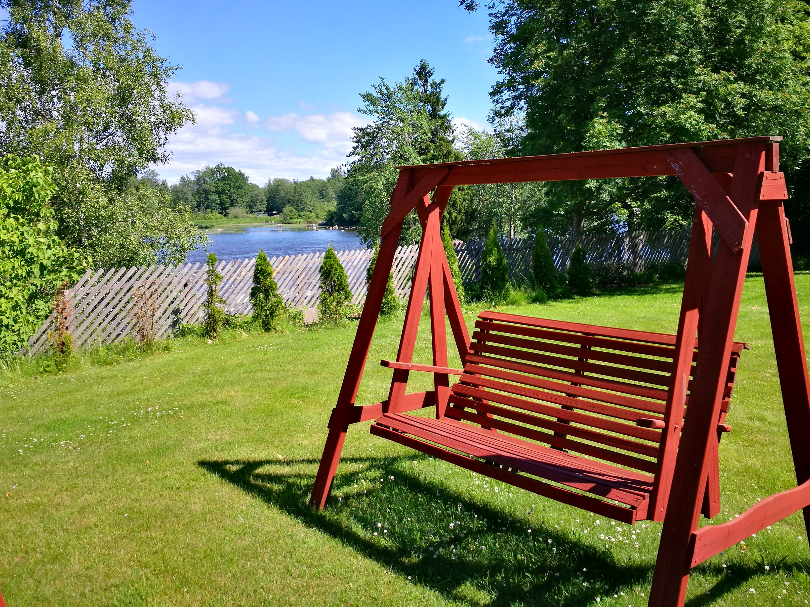
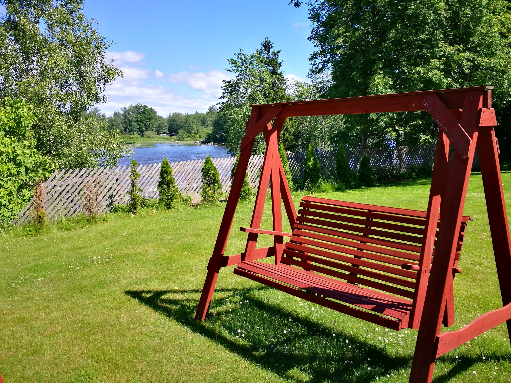
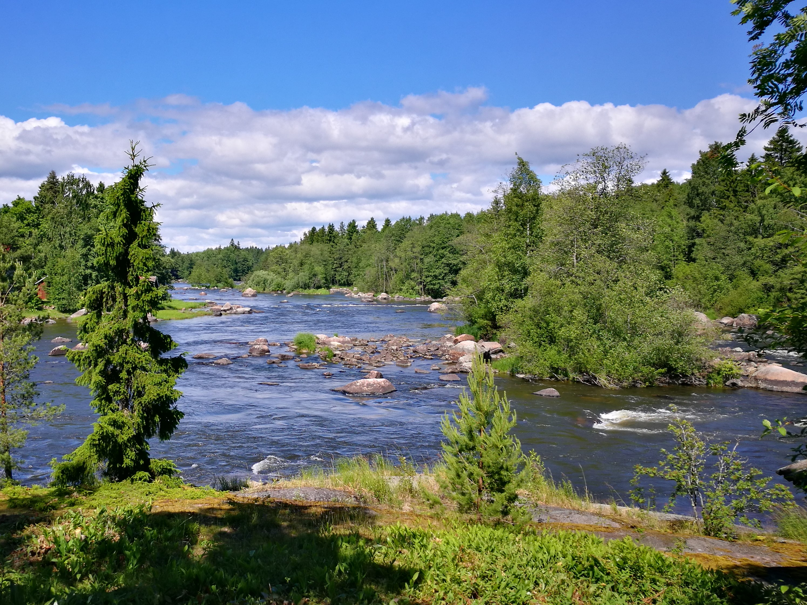
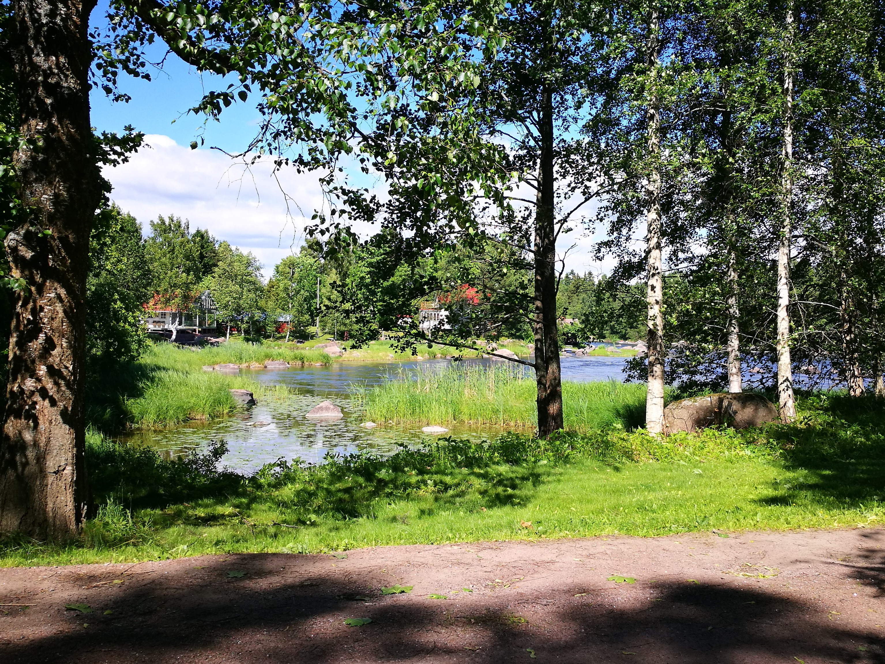
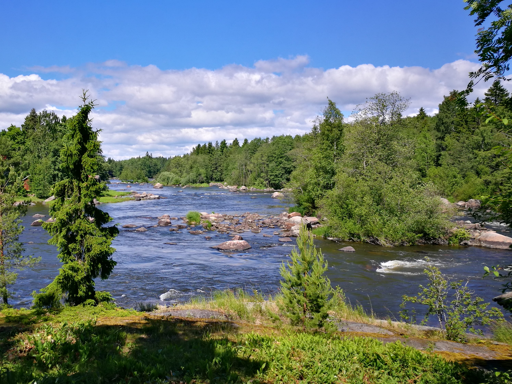
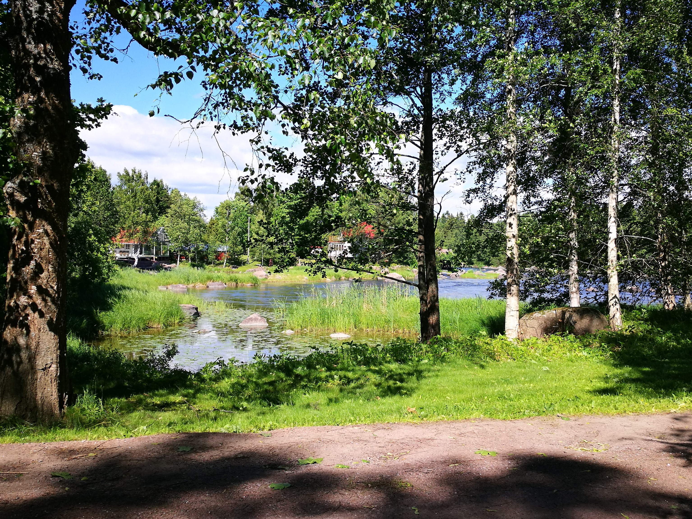

Villa Koskenäyräs

Villa Koskenäyräs
Esittely
Koskenäyräs on suuri hirsihuvila upean Kymijoen rannalla. Koskenäyräs on oiva paikka järjestää suuri juhlia ja tapahtumia, kokouksia, saunailtoja. Tilat sopivat myös pelkkään majoitukseen. Rannalta on mahdollisuus kalastaa Siikakosken kalastusluvan kanssa.
Tontilla on oma asuinrakennus majoitus-, kokous-, sekä juhlatilaisuuksiin. Aivan joen tuntumassa on rantasauna ja grillikatos.
Pihapiiri on aivan omassa rauhassa kaukana kiireestä ja melusta ja kuitenkin lähellä Kotkan kaupunkia ja hyviä kulkuyhteyksiä.
Kymijoen Siikakoskenhaara tarjoaa upeat mahdollisuudet esimerkiksi kalastukselle, koskenlaskulle tai luonnossa kävelylle.
Helsingistä on reilu tunnin ajomatka sekä Kotkan kaupungin keskusta sijaitsee noin 10km päässä.
Juhlien ja tapahtumien maksimikapasiteetti on 80 henkeä. Lomamökkivuokraus max. 10 hengelle.
Tarjoukset ja lähipäivien vapaat päivät ilmoitamme facebook -sivuillamme.
Tervetuloa!
Piha
Tontti on aivan joen rannassa upeiden koskimaisemien kera ja kokoa tontilla on reilun hehtaarin verran. Rantaviivaa löytyy muutaman sadan metrin verran. Pihalla on tilaa pystyttää iso teltta juhlia varten ja pysäköinti tilaa löytyy useammalle kymmenelle autolle. Rannasta löytyy myös grillikatos sekä pieni kota aivan joen rannassa.

 

 




Päärakennus
Päärakennus on yli 500 neliön hirsilinna, joka soveltuu mainiosti juhlien, kokouksien ja tapahtumien järjestämiseen. Rakennuksen ensimmäinen kerros on tarkoitettu pääsääntöisesti juhla sekä kokoustilana ja toinen kerros on majoitus käytössä. Tilat ja kalusteet järjestetään käyttötarkoituksen ja asiakkaiden toiveiden mukaisesti. Rakennuksessa on myös ilmainen wi-fi asiakkaiden käytössä. Ruokasaliin mahtuu samanaikaisesti noin 40 henkilöä. Tilaa voidaan käyttää juhlien ruokailutilana tai kokoustilana. Majoittujilla on mahdollisuus kalastaa rannalta Siikakosken kalastusluvan kanssa. Kokoustilavuokra sijoittuu 08:00-16:00 väliselle ajalle. Muista ajoista voidaan sopia erikseen. Juhlatilavuokrien ajoista sovitaan jokaisen asiakkaan kanssa erikseen. Majoituskäytöön sisäänkirjautumisaika on klo 15:00 ja uloskirjautuminen klo 12:00.
2 huonetta
vessa
toimisto
2 huonetta 2
vessa 2
toimisto 2


Rantasauna
Rantasauna sijaitsee vain muutaman metrin päästä upeaa Kymijokea. Tiloihin mahtuu 10-15 henkilöä samanaikaisesti ja sopii mainiosti niin yritys- kuin yksityisasiakkaille. Rantasaunalta löytyy pieni keittiö, takkahuone, oleskelutila, pukuhuone sekä tietysti suihkut ja sauna puu- ja sähkökiukaalla. Rannasta pääsee helposti uimaan virtaamattomaan poukamaan. Rantasaunan vuokra sijoittuu klo 17:00-01:00 väliselle ajalle.


Yhteystiedot
Hinnat
Ark.
Pe-La
La-Su
Pe-Su
Ark.
Pe-La
La-Su
Pe-Su
Ark.
Pe-La
La-Su
Pe-Su
Varaa: